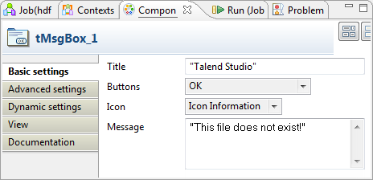

Warning
This component will be available in the Palette of the studio on the condition that you have subscribed to the relevant edition of Talend Big Data Studio.
|
Component family |
Big Data/File | |
|
Function |
This component checks whether a file exists in a specific directory in HDFS. | |
|
Purpose |
This component checks the existence of a specific file in HDFS. | |
|
Basic settings |
Use an existing connection |
Select this check box and in the Component List click the relevant connection component to reuse the connection details you already defined.
NoteWhen a Job contains the parent Job and the child Job, Component list presents only the connection components in the same Job level. |
|
Version |
Distribution |
Select the product you are using as the Hadoop distribution from the drop-down list. The options in the list vary depending on the component you are using. |
|
Hadoop version |
Select the version of the Hadoop distribution you are using. | |
|
Connection |
NameNode URI |
Type in the URI of the Hadoop NameNode. |
|
|
User name |
Enter the user authentication name of HDFS. |
|
Group |
Enter the membership including the authentication user under which the HDFS instances were started. This field is available depending on the distribution you are using. | |
|
|
Use kerberos authentication |
If you are accessing the Hadoop cluster running with Kerberos security, select this check box, then, enter the Kerberos principal name for the NameNode in the field displayed. This enables you to use your user name to authenticate against the credentials stored in Kerberos. This check box is available depending on the Hadoop distribution you are connecting to. |
|
HDFS directory |
Browse to, or enter the directory in HDFS where the data you need to use is. | |
|
|
File name or relative path |
Enter the name of the file you want to check whether this file exists. Or if needs be, browse to the file or enter the path to the file, relative to the directory you entered in HDFS directory. |
| Advanced settings |
Hadoop properties |
If you need to use custom configuration for the Hadoop of interest, complete this table with the property or properties to be customized. Then at runtime, the customized property or properties will override those corresponding ones defined earlier for the same Hadoop. For further information about the properties required by Hadoop, see the Hadoop documentation. |
|
tStatCatcher Statistics | Select this check box to gather the Job processing metadata at a Job level as well as at each component level. | |
|
Dynamic settings |
Click the [+] button to add a row in the table and fill the Code field with a context variable to choose your HDFS connection dynamically from multiple connections planned in your Job. This feature is useful when you need to access files in different HDFS systems or different distributions, especially when you are working in an environment where you cannot change your Job settings, for example, when your Job has to be deployed and executed independent of Talend Studio. The Dynamic settings table is available only when the Use an existing connection check box is selected in the Basic settings view. When a dynamic parameter is defined, the Component List box in the Basic settings view becomes unusable. For more information on Dynamic settings and context variables, see Talend Data Integration Studio User Guide. | |
|
Usage |
tHDFSExist is a standalone component. | |
|
Prerequisites |
The Hadoop distribution must be properly installed, so as to guarantee the interaction with the Studio. For example, if you need to connect to MapR from the Studio, ensure that you have installed
the MapR client in the machine where the Studio is, and added the MapR client library to the
PATH variable of that machine. For Windows, this library is lib\MapRClient.dll in the MapR client jar file; without adding it, you may
encounter the following error: For further information about how to install an Hadoop distribution, see the manuals corresponding to the Hadoop distribution you are using. | |
|
Limitation |
JRE 1.6+ is required. | |
In this scenario, the two-component Job checks whether a specific file exists in HDFS and returns a message to indicate the result of the verification.
In the real-world practice, you can take further action to process the file checked according to the verification result, using the other HDFS components provided with the Studio.

Launch the Hadoop distribution in which you want to check the existence of a particular file. Then, proceed as follows:
In the Integration perspective of the Studio, create an empty Job, named hdfsexist_file for example, from the Job Designs node in the Repository tree view.
For further information about how to create a Job, see the user guide of the Studio for integration.
Drop tHDFSExist and tMsgBox onto the workspace.
Connect them using the Trigger > Run if link.
Double-click tHDFSExist to open its Component view.

In the Version area, select the Hadoop distribution you are connecting to and its version.
In the Connection area, enter the values of the parameters required to connect to the HDFS.
In the real-world practice, you may use tHDFSConnection to create a connection and reuse it from the current component. For further information, see the section called “tHDFSConnection”.
In the HDFS Directory field, browse to, or enter the path to the folder where the file to be checked is. In this example, browse to /user/ychen/data/hdfs/out/dest.
In the File name or relative path field, enter the name of the file you want to check the existence. For example, output.csv.
Double-click tMsgBox to open its Component view.
In the Title field, enter the title to be used for the pop-up message box to be created.
In the Buttons list, select OK. This defines the button to be displayed on the message box.
In the Icon list, select Icon information.
In the Message field, enter the message you want to displayed once the file checking is done. In this example, enter "This file does not exist!".
Click the If link to open the Basic settings view, where you are able to define the condition for checking the existence of this file.

In the Condition box, press Ctrl+Space to access the variable list and select the global variable EXISTS. Type an exclamation mark before the variable to negate the meaning of the variable.
Press F6 to execute this Job.
Once done, a message box pops up to indicate that this file called output.csv does not exist in the directory you defined earlier.
In the HDFS we check the existence of the file, browse to this directory specified, you can see that this file does not exist.